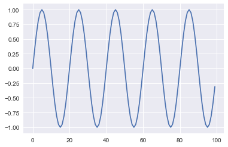
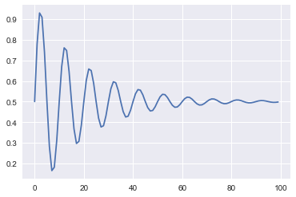
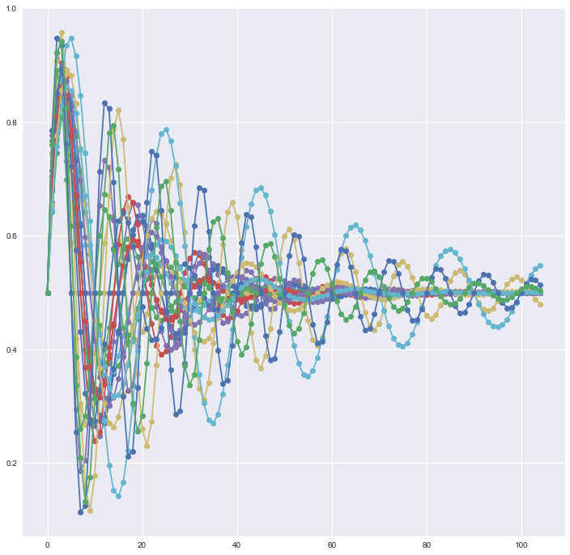
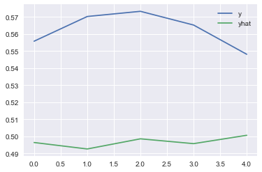

2. Stacked LSTM
from math import sin from math import pi from math import exp from random import random from random import randint from random import uniform from numpy import array from matplotlib import pyplot import matplotlib.pyplot as plt import seaborn as sns %matplotlib inline
Sample sequence
length = 100 freq = 5 sequence = [sin(2 * pi * freq * (i/length)) for i in range(length)]
- Plot sequence
pyplot.plot(sequence) pyplot.show()

- With Damping
length = 100 period = 10 decay = 0.05 sequence = [0.5 + 0.5 * sin(2 * pi * i / period) \ * exp(-decay * i) for i in range(length)]
pyplot.plot(sequence) pyplot.show()

Sequence Generator
- Generate damped sine wave in [0,1]
def generate_sequence(length, period, decay): return [0.5 + 0.5 * sin(2 * pi * i / period) *\ exp(-decay * i) for i in range(length)]
- Generate input and output pairs of damped sine waves
def generate_examples(length, n_patterns, output): X, y = list(), list() for _ in range(n_patterns): p = randint(10, 20) d = uniform(0.01, 0.1) sequence = generate_sequence(length + output, p, d) X.append(sequence[:-output]) y.append(sequence[-output:]) X = array(X).reshape(n_patterns, length, 1) y = array(y).reshape(n_patterns, output) return X, y
- test problem generation
plt.figure(figsize =(12,12)) X, y = generate_examples(100, 20, 5) for i in range(len(X)): pyplot.plot([x for x in X[i, :, 0]] + [x for x in y[i]], '-o') pyplot.show()

Model
# Example of one output for whole sequence from keras.models import Sequential from keras.layers import LSTM,Dense
# configure problem length = 50 output = 5 # define model model = Sequential() model.add(LSTM(20, return_sequences=True, input_shape=(length, 1))) model.add(LSTM(20, return_sequences=True)) model.add(LSTM(20, return_sequences=True)) model.add(LSTM(20)) model.add(Dense(output)) # compile model.compile(loss='mae', optimizer='adam') print(model.summary())
_________________________________________________________________ Layer (type) Output Shape Param # ================================================================= lstm_13 (LSTM) (None, 50, 20) 1760 _________________________________________________________________ lstm_14 (LSTM) (None, 50, 20) 3280 _________________________________________________________________ lstm_15 (LSTM) (None, 50, 20) 3280 _________________________________________________________________ lstm_16 (LSTM) (None, 20) 3280 _________________________________________________________________ dense_4 (Dense) (None, 5) 105 ================================================================= Total params: 11,705 Trainable params: 11,705 Non-trainable params: 0 _________________________________________________________________ None
Fit the model
X, y = generate_examples(length, 500, output) model.fit(X, y, batch_size=10, epochs=5, verbose = 2)
Epoch 1/5 20s - loss: 0.0586 Epoch 2/5 20s - loss: 0.0413 Epoch 3/5 21s - loss: 0.0403 Epoch 4/5 20s - loss: 0.0400 Epoch 5/5 20s - loss: 0.0419 <keras.callbacks.History at 0x12cabab70>
Evaluate the model
# evaluate model X, y = generate_examples(length, 100, output) loss = model.evaluate(X, y, verbose=0) print('MAE: %f' % loss)
MAE: 0.050917
Prediction
# prediction on new data X, y = generate_examples(length, 20, output) yhat = model.predict(X, verbose=0) pyplot.plot(y[0], label='y') pyplot.plot(yhat[0], label='yhat') pyplot.legend() pyplot.show()
